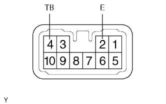

CÔNG TẮC CẢNH BÁO NGUY HIỂM > KIỂM TRA |
| 1. KIỂM TRA CÔNG TẮC TÍN HIỆU BÁO NGUY HIỂM |
|  |
Đo điện trở của công tắc.
| Nối dụng cụ đo | Tình trạng công tắc | Điều kiện tiêu chuẩn |
| 2 (E) - 4 (TB) | OFF | 10 kΩ trở lên |
| 2 (E) - 4 (TB) | ON | Dưới 1 Ω |
Kiểm tra hoạt động chiếu sang.
Nối cực dương (+) ắc quy vào cực 8 và đầu đo âm (-) vào cực 9. Sau đó kiểm tra rằng đèn LED sáng lên.